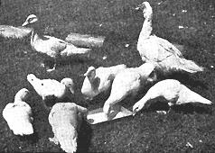

Here are our quackless Muscovy ducks. We chose this breed because they aren't noisy; they have a better flavor, we think; they're very hardy and free from disease. Our trio of drake and two ducks produced 18 young ducks on their first hatchings. These ducklings are about 6 weeks old.